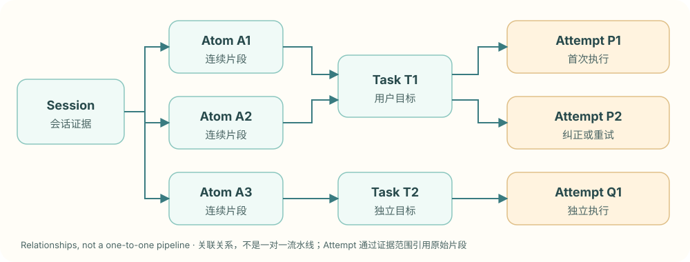
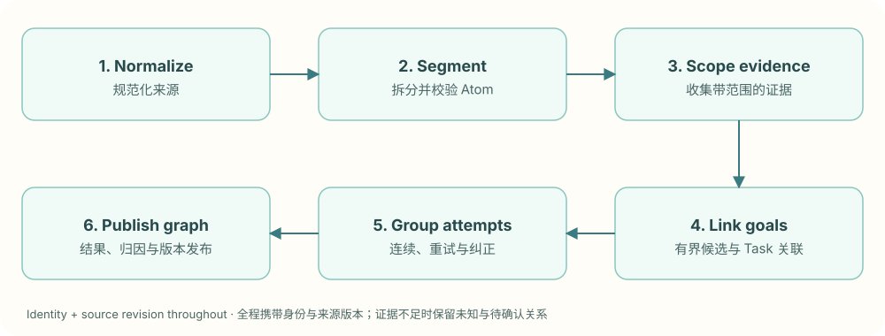
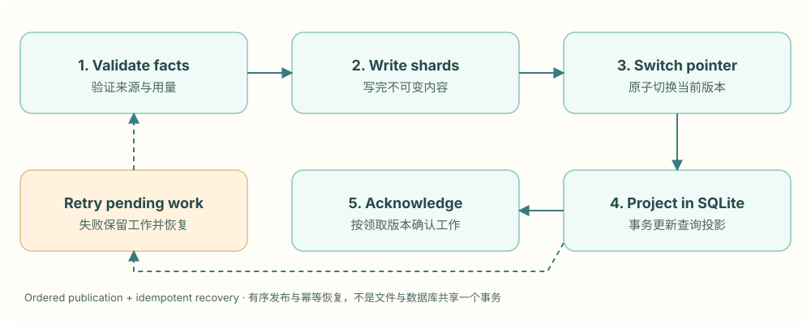

Overview方案概览
xskill organizes time-ordered assistant conversations into a graph of user goals and execution attempts. It preserves source evidence while distinguishing continuous intent segments, logical goals and individual executions. This makes resumed goals, retries, user corrections and resource usage independently traceable.
The task graph is a separate semantic processing branch. It reads Sessions and Atoms to build Tasks, Attempts and their relationships. It does not silently rewrite consumed Atoms during linking, and its existence does not mean the production Skill pipeline already consumes complete task-level inputs.
This reference describes object responsibilities, processing, persistence and current boundaries. Behavior was checked on September 12, 2026. Optional designs and incompletely supported cases are listed separately at the end.
xskill 通过任务图，把按时间记录的助手会话整理为围绕用户目标组织的工作过程。它保留原始证据，区分连续意图片段、逻辑目标和执行尝试，使目标恢复、失败重试、用户纠正及资源消耗能够被分别追踪。
任务图是一条独立的语义处理支路。它读取 Session 和 Atom，构建 Task、Attempt 及其关系，不在关联过程中隐式改写已经消费的 Atom，也不等同于 Skill 生成流水线已经完整采用了任务级输入。
本文说明各对象的职责、处理过程、持久化规则和当前边界。实现行为核对于 2026 年 9 月 12 日；可选设计与尚未完整支持的场景在文末单独说明。
Why a task graph is needed为什么需要任务图
A single assistant session can contain several goals, while one goal can continue across sessions. A user may switch from goal A to goal B and later return to A. One goal may also involve failure, correction and another execution.
Grouping only by session mixes unrelated goals. Grouping only by messages or continuous segments cannot represent a goal resumed later. Keeping only a final summary loses the failed approach, execution relationships and the evidence behind an outcome.
The task graph preserves the timeline while adding two views: which evidence serves the same goal, and which execution attempt that evidence belongs to.
一次助手会话可能包含多个目标，同一个目标也可能在多个会话中延续。用户可以在处理目标 A 的过程中转向目标 B，随后回到 A；同一目标还可能经历失败、纠正与重新执行。
仅按会话组织数据，容易把不同目标合在一起。仅按消息或连续片段组织数据，则难以表达非连续的目标恢复。只保留最终摘要，又会丢失失败经过、执行关系以及判断结果的具体依据。
任务图在保留时间顺序的同时，增加目标与执行两个观察层次：哪些证据共同服务于同一目标，以及这些证据分别属于哪次执行。
Responsibilities of the four objects四个对象的职责
| Object | Definition | Main purpose |
|---|---|---|
| Session | A Harness conversation record and its source information | Preserve user interaction, assistant output and available execution facts in order |
| Atom | A continuous segment of a Session centered on an intent | Provide locatable, inspectable segmented evidence |
| Logical Task, or Task | A user goal and its supporting evidence associations | Represent a goal continuing across segments and sessions |
| Task Attempt, or Attempt | One execution or retry of a Task | Preserve execution continuity, corrections, outcomes and resource attribution |
A Harness is the tool or runtime that hosts the assistant. Different Harnesses may expose different execution identities, structured terminal states and usage information.
These objects do not have one-to-one relationships:
- One Session can contain multiple Atoms and Tasks.
- One Task can associate non-contiguous Atoms and continue across Sessions within an allowed scope.
- An Atom has at most one confirmed primary Task membership, while proposed relationships can coexist.
- One Task can contain multiple Attempts.
- One Attempt can reference several evidence segments; one Atom can also contain multiple locatable execution attempts.
Session → Atom → Task → Attempt is a useful reading order, but not a complete data model. Tasks and Attempts connect to evidence through separate references; they do not move the source content from layer to layer.
| 对象 | 定义 | 主要用途 |
|---|---|---|
| Session | 一次 Harness 会话的记录及来源信息 | 保留按顺序发生的用户交互、助手输出和可获得的执行事实 |
| Atom | Session 中围绕一个意图的连续片段 | 提供可定位、可检查的分段证据 |
| Logical Task，简称 Task | 一个用户目标及支持该目标的证据关联 | 表达目标跨片段、跨会话的延续与关系 |
| Task Attempt，简称 Attempt | 某个 Task 的一次执行或重试 | 保存执行连续性、纠正、结果及资源归因 |
Harness 指承载助手运行的工具或执行环境。不同 Harness 提供的运行身份、结构化终态和用量信息可能不同。
四个对象不是一对一关系：
- 一个 Session 可以包含多个 Atom 和多个 Task。
- 一个 Task 可以关联不连续的多个 Atom，并在允许的范围内跨 Session 延续。
- 每个 Atom 最多有一个已确认的主要 Task 归属，同时可以保留待确认关系。
- 一个 Task 可以包含多个 Attempt。
- 一个 Attempt 可以引用多个证据片段；一个 Atom 内也可以存在多次可定位的执行尝试。
因此，Session → Atom → Task → Attempt 适合描述理解顺序，但不能代替实际的数据关系。Task 和 Attempt 都通过独立引用连接证据，而不是把原始内容逐层搬走。

On narrow screens, scroll the diagram sideways to see all relationships.小屏幕可左右滑动结构图，查看完整关系。
An end-to-end example一个完整示例
A user asks the assistant to fix a timeout in an order API. The assistant first raises the timeout, but validation still fails. The user then asks it to inspect the connection pool. During the investigation, the user requests a translation before returning to the API problem.
This can produce four continuous segments: initial investigation, correction, translation and resumed investigation. They serve two primary goals: resolving the API timeout and completing the translation.
| Segment | Goal | Execution meaning |
|---|---|---|
| Investigate and raise the timeout | Resolve the API timeout | Initial attempt |
| Correct the approach and inspect the pool | Resolve the API timeout | Corrected attempt |
| Translate a description | Complete the translation | Execution of an independent goal |
| Return to the pool problem and validate | Resolve the API timeout | Resume the goal; execution continuity is a separate question |
This example assumes the required evidence meets confirmation conditions. Similar wording alone does not guarantee automatic merging.
With a trustworthy stable run identity, the resumed investigation may remain part of the corrected Attempt. Without sufficient continuity evidence, a new Attempt and a proposed continuation relationship are retained. “Continue this problem” is a goal-continuation cue, not a complete execution identity.
Likewise, “test passed” in the record does not automatically establish verified Task success. The result must be attributable to the relevant goal, execution attempt and valid evidence.
用户要求解决订单接口超时。助手先调整超时阈值，但验证结果仍然失败。用户随后要求检查连接池。排查过程中，用户又要求翻译一段说明，完成后再回到接口问题。
这个过程可以包含四个连续片段：首次排障、纠正方法、翻译说明和恢复排障。它们对应两个主要目标：解决接口超时，以及完成翻译。
| 片段 | 目标归属 | 执行含义 |
|---|---|---|
| 首次排查并调整超时阈值 | 解决接口超时 | 第一次尝试 |
| 用户纠正方法，开始检查连接池 | 解决接口超时 | 纠正后的尝试 |
| 翻译说明 | 完成翻译 | 独立目标的执行 |
| 返回连接池问题继续验证 | 解决接口超时 | 恢复原目标，执行是否连续还需单独判断 |
这里的归属是假定相应证据已满足确认条件的示例，不表示出现相似文字就必然自动合并。
如果有可信的稳定运行身份，恢复排障可能仍属于纠正后的同一次 Attempt；如果没有足够执行连续性证据，则保留新的 Attempt 及待确认的继续关系。用户说“继续这个问题”，能够提供目标延续线索，但不是完整的执行身份证明。
同样，记录里出现“测试通过”，也不自动意味着整个 Task 已经验证成功。结果必须能归属到对应目标、执行尝试及有效证据。
From source records to referenceable evidence从原始来源到可引用的证据
Normalized conversations and metadata
Adapters handle tool-specific source formats, preserving normalized conversations and available actor, workspace, model, Harness, run identity, terminal state and usage information. Downstream task interpretation should not depend on every tool's internal file format.
Current processing reads normalized text, Atom files and source metadata. Display text may be truncated, and fields vary by source. A display view must not be treated as a lossless raw log. Missing terminal states, model versions and usage must not be invented.
Identity, scope and content revision
Stable identity answers “which object is this?” A content digest answers “has this object's input changed?” Titles, summaries and local paths are unsuitable as durable task identities.
The graph distinguishes access, goal ownership and collection source:
| Scope | Purpose |
|---|---|
| TenantScope | Defines the permission and privacy boundary |
| TaskScope | Defines the semantic boundary for automatic linking; by default combines tenant, actor and workspace |
| SourceScope | Provides a stable namespace for a collection source |
Session and Atom references carry their scopes. Bare session or segment identifiers cannot be compared across sources as globally unique identities.
Sharing Skills within a team does not make similar requests from different members one Task. Access to the same material is not permission to group goals. Several sources can belong to a TaskScope, but cross-source continuation still requires evidence.
规范化会话与元数据
适配器处理不同工具的来源格式，保留规范化会话内容以及可获得的成员、项目、模型、Harness、运行身份、终态和用量信息。下游不应依赖每种工具的内部文件格式来解释任务。
当前处理会读取规范化文本、Atom 文件与来源元数据。展示文本可能存在截断，各来源字段也并不完全一致。因此，展示视图不能被视为无损原始日志，未提供的终态、模型版本和用量不能被补造。
身份、范围与内容版本
稳定身份回答“这是哪个对象”，内容摘要回答“这份对象的输入是否发生变化”。标题、摘要和本机路径不适合作为长期任务身份。
任务图使用以下范围区分权限、目标归属和采集来源：
| 范围 | 作用 |
|---|---|
| TenantScope | 限定权限与隐私边界 |
| TaskScope | 限定允许进行自动任务关联的语义范围，默认结合租户、成员和工作区 |
| SourceScope | 区分采集来源的稳定命名空间 |
Session 和 Atom 的引用携带所属范围。裸会话编号或片段编号不能跨来源直接判等。
团队成员能够共享 Skill，不意味着他们的相似需求属于同一个 Task。有权访问相同资料，也不等于允许跨目标归组。多个来源可以位于同一 TaskScope，但跨来源延续仍需要相应证据。
Session to Atom: identifying continuous intent segmentsSession 到 Atom：确定连续意图片段
Semantic proposals and deterministic validation
The splitter starts with a line-numbered map of user queries, previous segments and the current resume position. The model reads source text as needed and submits segment start positions, intents and summaries. Deterministic code validates starts and derives ends.
User turns are candidate boundaries, not mandatory cuts. Several turns can share a continuous intent, and a single Atom can preserve retries or corrections for the Attempt layer to interpret later.
Code checks ranges, ordering, bounds, coverage and overlap for the current input. Summary quality needs separate evaluation: valid ranges do not establish a faithful summary.
Evidence coordinates
Current Atom offsets are one-based line numbers, using a half-open interval that includes the start and excludes the end. [7, 11) covers lines 7 through 10.
The first complete split begins at line 1; the final segment ends at the total line count plus one. Incremental splitting covers the range after the current resume position. Neighbor references preserve segment order.
Evidence ranges also need a source revision and content digest. A file still existing does not mean the content behind an old reference remains valid.
Consumed evidence and appended output
Once an Atom is persisted and consumed, routing and linking must not silently rewrite it without versioning. Re-splitting or appending facts requires an explicit relationship between old references and new content, with downstream invalidation.
Current incremental splitting primarily handles new user intents. Assistant-only or tool-only append operations still have coverage and attribution gaps. “No new user turn” must not be interpreted as “no new evidence.” The limitation and intended direction are listed below.
语义建议与程序校验
当前拆分器先提供带行号的用户提问地图、已有片段和本轮续接位置。模型按需阅读原文，提交意图片段的起点、意图和摘要；确定性程序负责检查起点并推导终点。
用户回合是候选边界，不是必须切分的命令。多个回合可以属于一个连续意图；同一个 Atom 内也可以保留后续由 Attempt 层解释的重试或纠正。
程序检查范围是否有效、顺序是否正确、是否越界，以及本轮输入是否无遗漏、无重叠地覆盖。语义摘要的质量需要独立评价，区间校验通过并不证明摘要准确。
证据坐标
当前 Atom 的起止位置使用从 1 开始的行号，采用包含起点、不包含终点的半开区间。范围 [7, 11) 对应第 7 至第 10 行。
首次完整拆分从第 1 行开始，末段结束位置为总行数加 1；增量拆分覆盖本轮续接位置之后的范围。前后片段通过引用保持时间顺序。
证据范围还需要绑定来源版本和内容摘要。文件仍存在，不代表旧引用中的内容仍然有效。
已消费证据与续写
已经落盘并被下游消费的 Atom 不应在路由或任务关联时被无版本改写。重新拆分或追加事实，需要明确旧引用与新内容的关系，并处理下游失效。
当前增量拆分主要面向新增用户意图。仅追加助手或工具结果时仍有覆盖与归属缺口；不能把“没有新用户回合”解释为“没有新证据”。这一限制及改进方向见文末。
Atom to Task: organizing a shared user goalAtom 到 Task：组织同一个用户目标
Reusing unchanged memberships
Graph construction checks source and segment revisions and reuses unchanged confirmed memberships and stable identities. Rebuilding should not assign new identifiers to every historical task.
Segments requiring a new decision are scoped by TaskScope before task candidates are retrieved.
Bounded candidates and linking rules
The default linker uses bounded inverted-index candidates and recent tasks from the same Session. Segment terms, candidate count and task-anchor size have limits. An anchor is a bounded feature set for retrieval and comparison, not an ever-growing full task prompt.
Explicit continuation, retry or correction cues still require candidate matching. An existing Task is reused automatically only when the best candidate meets the threshold and is sufficiently separated from the next candidate.
Content similarity alone does not establish goal identity. When ordinary similar segments cannot be confirmed, the linker can create an independent confirmed primary Task while retaining proposed relationships to similar older Tasks.
Default linking is not all-pairs model clustering and should not be described as already using vector retrieval or LLM adjudication by default.
Confirmation and uncertainty
Relationship decisions distinguish confirmed, proposed, rejected and needs-review states. Primary membership and corresponding official statistics use confirmed facts; multiple candidates are not counted as independent confirmed memberships.
Heuristic retrieval scores are not calibrated probabilities. The system retains reasons and algorithm information rather than presenting a similarity score as a probability of correctness.
Task relationships can also represent parent and child goals, dependencies or follow-up tasks. Having these relationship types does not imply reliable automatic inference from arbitrary conversations. Writes still validate scope, parent constraints and acyclicity.
复用未变化的归属
任务构建会检查已有来源与片段版本，复用未变化的已确认归属及稳定身份，避免每轮重建都给历史任务重新编号。
需要重新判断的片段，先按 TaskScope 限制范围，再召回候选任务。
有界候选与关联规则
当前默认 linker 使用有界倒排候选和同 Session 最近任务，限制片段词项、候选数量和任务锚点大小。任务锚点是用于检索与比较的有限特征集合，不是持续增长的整份任务正文。
明确的继续、重试或纠正信号仍需结合候选匹配判断。只有最佳候选满足门槛，并与次优候选拉开足够差距，才自动复用已有 Task。
相似内容本身不构成目标相同的证明。普通相似片段在不能确认时，可以建立独立的已确认主要 Task，同时保留指向相似旧任务的待确认关系。
默认关联不是全量两两模型聚类，也不应被描述为已经默认使用向量召回或 LLM 裁决。
确认与不确定性
关系决策区分已确认、待确认、已拒绝和需要复核。正式的主要归属与统计使用已确认事实，不将多个候选关系同时作为独立确定归属。
启发式检索分数不是经过校准的概率。系统保留判断原因与算法信息，不应将某个相似度直接解释为“正确概率”。
Task 关系可以进一步表达父子目标、依赖或后续任务；关系类型的存在不代表系统能够自动从任意会话可靠推断这些关系。写入时仍需检查范围、父子约束与无环性。

On narrow screens, scroll the diagram sideways to see all relationships.小屏幕可左右滑动结构图，查看完整关系。
Task and Attempt: goal identity versus execution continuityTask 与 Attempt：区分目标身份和执行连续性
An Attempt belongs to one Task and connects to execution evidence through EvidenceRange references. A goal can be executed repeatedly; a later success must not overwrite an earlier failed execution.
Current grouping considers direct adjacency in the original timeline, a stable run id under the same Harness, explicit retry or correction cues, and previously confirmed Attempt boundaries.
| Situation | Handling |
|---|---|
| Same goal with execution-continuity evidence | May retain the same Attempt |
| Explicit retry | Create an Attempt with retry_of |
| Explicit correction of the earlier approach | Create an Attempt with correction_of |
| Same goal without execution-continuity evidence | Create an Attempt with proposed continuation_of |
Crossing a Session boundary does not necessarily start an Attempt; staying in one Session does not imply one Attempt. Compaction, recovery and retries must be interpreted from execution facts.
When a retry or correction is locatable within one Atom, its evidence can be split into execution ranges associated with separate Attempts without changing the Atom itself.
Previously confirmed execution boundaries take precedence over later automatic grouping. Rebuilding must not silently collapse existing Attempts. Confirmed Attempt relationships must stay within one Task and remain acyclic.
Attempt 属于一个确定的 Task，通过 EvidenceRange 连接执行证据。相同目标可以被多次执行，失败记录不能被后一次成功覆盖。
当前实现根据以下信息组织 Attempt：原始时间链上的直接相邻片段、相同 Harness 下的稳定 run id、明确的重试或纠正信号，以及已经确认的历史 Attempt 边界。
| 情况 | 处理方式 |
|---|---|
| 同目标且具有执行连续性证据 | 可以沿用同一 Attempt |
| 明确重新尝试 | 新建 Attempt，记录 retry_of |
| 明确纠正原执行方法 | 新建 Attempt，记录 correction_of |
| 目标相同但缺少执行连续性证据 | 新建 Attempt，保留待确认的 continuation_of |
跨 Session 不一定意味着新 Attempt；同 Session 也不意味着只有一次 Attempt。上下文压缩、恢复和重试都需要依据执行事实解释。
同一个 Atom 内存在可定位的重试或纠正时，可以把它的证据范围划为多个执行段，再关联不同 Attempt，而不修改 Atom 本身。
历史已确认的执行边界优先于后续自动分组。重新构建不能静默折叠已有 Attempt；已确认的 Attempt 关系必须位于同一 Task 内并满足无环约束。
Outcomes: completion, success, verification and user feedback结果判断：结束、成功、核验与用户反馈
Task outcomes use separate dimensions rather than overloading one boolean.
| Dimension | Meaning |
|---|---|
| Lifecycle | Whether a Task is open, blocked or closed, or an Attempt is running or finished |
| Outcome | Observed success, partial success, failure, cancellation or unknown result |
| Verification | Verified, unverified, contradicted or conflicting evidence |
| User disposition | Accepted, rejected, corrected, cancelled or unknown feedback |
A finished execution does not establish goal completion. A failed execution does not establish that the Task cannot continue.
Automatic Attempt terminal inference currently relies primarily on structured Harness terminal information from a sole-Task Session. Source-reported success can finish an execution while verification remains unverified. Deriving a Task outcome requires the relevant outcome and verification evidence conditions.
For multi-goal Sessions, a session-wide success must not be copied to every Task. A final Attempt without structured terminal evidence may remain running with an unknown outcome. Conservative records are preferable to fabricated completion or success.
If evidence drifts or a terminal fact is withdrawn, affected automatic conclusions must become unknown or require review. Old decisions and their stale evidence remain auditable.
任务结果使用多个维度，避免一个布尔值承载不同含义。
| 维度 | 说明 |
|---|---|
| 生命周期 | Task 是否仍开放、阻塞或关闭；Attempt 是否仍运行或已经结束 |
| 结果 | 成功、部分成功、失败、取消或未知等观测结论 |
| 核验状态 | 是否已验证、未验证，或出现反证与冲突 |
| 用户反馈 | 接受、拒绝、纠正、取消或未知 |
一次执行结束，不代表用户目标完成；一次执行失败，也不代表该 Task 不会继续。
当前自动 Attempt 终态主要接受单 Task Session 上的结构化 Harness 终态。来源报告成功可以结束执行，但核验状态仍可以是未验证。派生 Task 结果需要满足相应结果与核验证据条件。
对于包含多个目标的会话，不能将会话级成功直接复制给所有 Task。没有结构化终态的最后一次 Attempt 可以保持运行中且结果未知；保守记录优于虚构结束或成功。
证据内容发生漂移或终态被撤销时，相关自动结论需要降为未知或待复核。旧判断及其过期依据应保留为可审计事实。
Updating, persisting and recovering the graph任务图怎样更新、保存与恢复
Independent background processing
The graph uses a worker consuming a durable change queue. Versioned queue entries identify sources or scopes requiring processing so an older completion acknowledgement cannot clear updates that arrived during processing.
Initial enablement can backfill historical sources in batches. Algorithm or important parameter changes can schedule scope rebuilds. Pausing the graph must not delete source evidence, human decisions or raw usage facts.
Immutable generations and query projections
A generation represents one complete graph result, stored as immutable manifests and content-addressed shards. Unchanged shards can be reused, and a small current pointer is switched atomically to publish the next version.
SQLite provides the query projection. Publication validates required facts, writes the graph contents, switches the pointer, updates the scope projection transactionally, then acknowledges the matching queue version.
File publication and a database update do not form a native cross-storage transaction. Recovery relies on the current pointer, generation identity, retained pending work and idempotent processing.
If the pointer changed but SQLite failed, work must not be acknowledged; the projection must be repaired later. If the projection completed but acknowledgement did not, repeated processing must not duplicate usage facts or renumber unchanged tasks.
Human corrections
Confirmations, rejections, merges, splits and state changes are stored as ordered, identified override events, validated and rebuilt under a scope lock. Automatic processing must not overwrite recorded human decisions.
Merging retains a canonical Task and aliases or tombstones for old identities. Splitting and moving must preserve Attempt ownership and confirmed relationships. Current operations cannot arbitrarily cut an Attempt; finer execution-boundary editing requires additional design.
Human events must not silently disappear when a source is deleted. Invalid references remain as stale facts.
独立后台处理
Task 图通过独立 worker 消费持久变更队列。队列记录来源或范围需要重新处理，并带有版本，避免旧一轮完成确认清掉处理期间新到达的更新。
首次启用时可以分批回填历史来源；算法或关键参数变化后，可以安排范围级重建。暂停 Task 图不应删除来源证据、人工修正或原始用量。
不可变版本与查询投影
任务图以 generation 表示一版完整结果，使用不可变 manifest 和内容寻址分片保存。未变化分片可以复用，当前指针通过原子切换发布新版本。
SQLite 提供任务查询投影。发布流程依次验证必要事实、写完任务图内容、切换当前指针、在事务中更新范围投影，最后按版本确认队列工作。
文件发布和数据库更新不是天然的跨介质事务。发生中断后，系统依靠当前指针、generation 身份、保留的待处理记录和幂等处理恢复一致状态。
例如，当前指针已经切换但 SQLite 更新失败时，工作不能被确认完成，后续需要补齐投影。投影写完而确认尚未完成时，重复处理不能重复创建用量事实或使未变化任务重新编号。
人工修正
人工确认、拒绝、合并、拆分和状态调整作为有顺序、有身份的 override 事件保存，在范围锁内校验和重建。自动处理不能覆盖已经记录的人工决定。
合并保留规范 Task 与旧身份的别名或墓碑；拆分和移动不能破坏已有 Attempt 所有权或已确认关系。当前操作不能任意切开 Attempt，细粒度执行边界编辑属于额外设计。
来源已消失时，人工事件也不应被静默删除；失效引用保留为过期事实。

On narrow screens, scroll the diagram sideways to see all relationships.小屏幕可左右滑动结构图，查看完整关系。
Usage and cost attribution用量与成本归因
xskill separates execution usage incurred by the original assistant completing user goals from xskill_processing usage incurred by splitting, linking and analysis. Each plane is recorded, presented and conserved separately; neither should be conflated into one model-execution cost.
Raw usage events have stable identities. Duplicate ingestion must have identical content. Unknown values remain null with reasons instead of becoming zero.
An event can be directly attributed, explicitly shared or left as an unattributed balance. Current shared allocation uses confirmed primary evidence line spans and the largest-remainder method to conserve integer Token totals.
The source total can be measured while an Attempt share remains a method-defined allocation, not a precise measurement of that execution. Session, Task and Attempt totals are different views of the same fact and must not be added again.
xskill 区分原助手执行用户目标的 execution 用量，以及 xskill 自身拆分、关联和分析产生的 xskill_processing 用量。两种平面分别记录、展示和守恒，不能混为单一模型执行成本。
原始用量事件具有稳定身份，重复摄取必须内容一致。未知值保留为空并说明原因，不能用零替代缺失。
一条原始事件可以直接归属某个对象，也可以显式共享分摊，或保留未归因余额。当前共享分配使用已确认主要证据的行跨度，并通过最大余数法保持整数 Token 守恒。
来源总 Token 可以是实测，而 Attempt 分摊仍只是方法明确的分配结果，不代表逐执行成本已经精确测量。Session、Task 与 Attempt 的汇总是同一事实的不同视图，不能重复相加。
Performance and complexity boundaries性能与复杂度边界
Bounded candidates and anchors, source caching, stable membership reuse and content-shard reuse reduce repeated reads and comparisons. They do not imply that every operation touches only new segments.
Current construction still collects and sorts within a scope, and projections may be replaced at scope granularity. A local update can therefore still depend on historical scope size. Candidate bounds alone do not establish end-to-end complexity or a measured speedup.
Incremental performance evaluation should record source reads, candidate comparisons, model calls, database writes, new shard bytes, memory and end-to-end latency. Optimizations must retain deletion, restart, override-replay and consistency checks.
有界候选、有限锚点、来源缓存、稳定归属复用和内容分片复用，减少重复读取与比较。但这些机制不代表每个步骤都只处理新增片段。
当前构建仍涉及范围内收集排序，查询投影也可能按范围替换。单次局部更新的总成本仍可能受历史规模影响，不能只根据候选上限推导整个流程的复杂度或宣称已获得具体性能提升。
评估增量性能时，应同时记录来源读取数、候选比较数、模型调用数、数据库写入数、新增分片字节、内存和端到端延迟。优化必须保留删除、重启、人工重放与结果一致性的验证。
Current boundaries and future directions当前边界与后续方向
These boundaries affect use and integration and should remain visible to readers.
| Scenario | Current boundary | Direction |
|---|---|---|
| Assistant-only or tool-only append | No new Atom may be produced, leaving stale ranges or later misattribution | Define append-evidence versions, ownership and downstream invalidation |
| Temporary source read failure | Exception classification can still confuse a read fault with a missing source | Distinguish deletion from retryable faults and retain affected work |
| External algorithm kernel | Task scheduling still has coupling to native-processing conditions | Let the graph's own switch and queue control scheduling |
| LLM-assisted linking | An optional unmerged extension, not default main-branch behavior | Bound candidates, calls and time; fall back on failure and evaluate quality separately |
| Native terminal state and Task success | Source fields and verifiable evidence vary; automatic inference is conservative | Improve source observability while separating execution completion from verified goal success |
| Task-grounded Skill learning | A graph does not mean production Skill learning fully consumes Tasks | Integrate through explicit evidence contracts, consumers and compatibility verification |
Update these boundaries with actual releases. Capability status must follow observable behavior and validation, not merely the existence of a type, configuration field or page.
以下边界影响系统使用和集成，不应被隐藏为实现细节。
| 场景 | 当前边界 | 方向 |
|---|---|---|
| 仅助手或工具追加结果 | 可能没有生成新 Atom，造成证据范围落后或后续错属 | 明确追加证据版本、归属和下游失效传播 |
| 临时读取失败 | 当前异常分类仍可能把读取故障当成来源消失 | 区分真实删除与可重试故障，保留受影响范围的工作 |
| 使用外部算法内核 | Task 调度仍有与原生处理条件耦合的边界 | 由 Task 图自身开关和队列控制调度 |
| LLM 辅助任务关联 | 属于可选的待合入扩展，不是主分支默认行为 | 限定候选、调用与耗时，失败回退，独立验证质量 |
| 原生终态与任务成功 | 各来源字段和可核验证据不齐全，自动判断保守 | 提升来源可观测性，保持执行结束与目标验证的区别 |
| Task 参与 Skill 学习 | 任务图存在不等于生产 Skill 链路已完整消费 Task | 通过独立资料契约、消费与兼容验证推进 |
这些边界应随实际发布更新。能力状态的依据是可核对的行为与验证结果，而不是某个类型、配置项或页面已经存在。
Frequently asked questions常见问题
Why not summarize each Session directly into a Task?
Sessions can mix goals and execution attempts. An overall summary is useful for reading, but cannot replace scoped evidence, goal identity and execution relationships.
Why retain Atoms?
Atoms provide continuous, referenceable upstream segments for independent splitting evaluation and evidence reuse. Tasks add non-contiguous goal semantics above them; the responsibilities differ.
Why can one Task have multiple Attempts?
The goal can stay the same while an approach fails, is retried or is corrected by the user. Separate Attempts preserve those processes so outcomes and costs can be distinguished by execution.
Why were similar segments not merged automatically?
Similarity is a retrieval signal. Scope, continuation evidence, separation between candidates and historical decisions also matter. Insufficient evidence leaves an independent primary membership and candidate relationships.
Can the graph automatically establish success for every Task?
No. Automatic outcomes depend on structured terminal evidence, goal attribution and verification. Missing evidence remains unknown.
Does rebuilding lose human corrections?
The design preserves them through a separate override log, versioned graph and recovery markers. Rebuilds must replay these facts rather than treat the query database as the only source of truth.
Does a task graph mean every downstream feature operates on Tasks?
No. The graph provides goal and execution structure. Each consumer still needs explicit inputs, eligibility checks, version invalidation, deduplication and fallback behavior.
为什么不直接对整个 Session 总结成任务？
会话可能混合多个目标和执行尝试。整体摘要适合阅读，但不能替代范围明确的证据、目标身份与执行关系。
为什么还需要 Atom？
Atom 提供连续、可引用的上游分段，便于独立检查拆分质量和复用证据。Task 在这些片段之上表达非连续目标，二者职责不同。
同一个 Task 为什么可能有多个 Attempt？
目标不变时，执行方法仍可能失败、重试或被用户纠正。多个 Attempt 保留这些过程，使成功、失败和成本可以按执行区分。
为什么相似片段没有自动合并？
相似只是候选信号。系统还需要满足范围、目标延续、最佳候选差距和历史决定等条件。证据不足时保留独立主要归属及候选关系。
Task 图可以完全自动判断成功吗？
不能对所有来源和场景作这一保证。自动结果取决于终态结构、目标归属和核验证据；缺失时保留未知。
重建会丢失人工修正吗？
设计上通过独立的人工事件日志、版本化任务图和恢复标记保留修正。重建应重放这些事实，不能把查询数据库当作唯一来源。
任务图是否意味着所有后续能力已经按 Task 工作？
不是。任务图提供目标与执行的语义结构。任何后续消费者都需要明确输入契约、资格判断、版本失效、去重与回退行为。